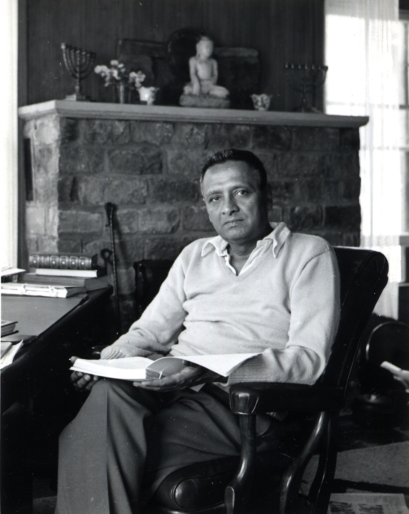

About


Swami Nikhilananda
Swami Nikhilananda, a direct disciple of Holy Mother Sri Sarada Devi, was born in a small Indian village in 1895 and was ordained a monk of the Ramakrishna Order in 1924. After spending several years in the Himalayan monastery of his Order, during which time he made a study of Hinduism and other systems of philosophy and religion, he was sent to America in 1931. He founded the Ramakrishna-Vivekananda Center of New York in 1933 and was its spiritual leader until his passing away in 1973.
Literary Work
The Swami was a gifted writer, and his contributions to the Ramakrishna-Vivekananda literature cannot be overstated. His translations of the scriptures, his biographies of Sri Ramakrishna, Holy Mother and Swami Vivekananda, his compilations of the works of Swami Vivekananda, his other books and many articles in various journals and publications are permanent sources of spiritual knowledge and inspiration. Notable among these works are the following titles: The Gospel of Sri Ramakrishna, Holy Mother, Vivekananda: A Biography, The Upanishads (volumes I-IV), The Bhagavad Gita, Self-Knowledge, Hinduism, Man in Search of Immortality, Sri Ramakrishna: The Face of Silence, and Sri Sarada Devi-The Holy Mother: Her Teachings and Conversations. Many of these works were originally introduced by major publishers, such as Harper & Row (New York) and George Allen & Unwin (London). Time Magazine called Swami Nikhilananda's translations of The Bhagavad Gita, "The first really readable, authoritative English translation of one of the world's greatest religious classics." W. Somerset Maugham praised Self-Knowledge as a "wonderful piece of exposition."
But the Swami's monumental work, for which he will ever be remembered, is The Gospel of Sri Ramakrishna. This complete translation into English from the original Bengali of the Sri Sri Ramakrishna Kathamrita, as recorded by "M," has made the immortal words of this great prophet of the nineteenth century available to countless readers throughout the world. Aldous Huxley was pleased to write a foreword to The Gospel of Sri Ramakrishna, and high praise was given to the book by such notable persons as Thomas Mann and Henry Miller. Time Magazine referred to The Gospel as "One of the world's most extraordinary religious documents."
The literary works of Swami Nikhilananda have been translated into many languages, among which are the following:
| German: | The Gospel of Sri Ramakrishna, The Bhagavad Gita, Self-Knowledge, The Upanishads, Hinduism |
| Italian: | The Gospel of Sri Ramakrishna, Man in Search of Immortality |
| Spanish: | The Gospel of Sri Ramakrishna, Self-Knowledge |
| Swedish: | The Gospel of Sri Ramakrishna, Holy Mother, Vivekananda : A Biography |
| Dutch: | The Gospel of Sri Ramakrishna |
| French: | Vivekananda: A Biography, The Mandukyopanishad |
| Portugese: | The Gospel of Sri Ramakrishna |
| Japanese: | Vivekananda: A Biography, Introduction to the Gospel of Sri Ramakrishna |